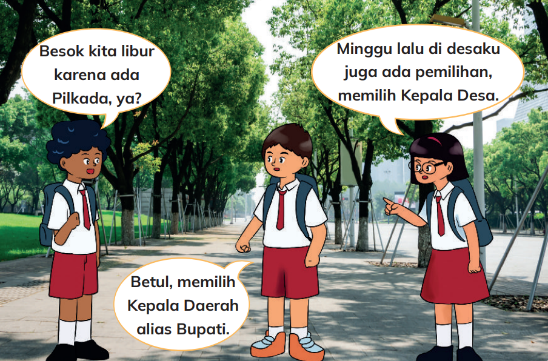

Pemilihan pemimpin daerah.
Siapa Memilih Siapa?
Di sekolah ada Ketua Kelas, di pemerintahan ada pemimpin daerah.
- Dipilih Rakyat: Kepala Desa (Kades) dipilih warga desa lewat Pilkades. Bupati dan Wali Kota dipilih rakyat lewat Pilkada.
- Ditunjuk/Diangkat: Lurah ditunjuk oleh Bupati/Wali Kota. Camat juga ditunjuk oleh Bupati/Wali Kota.
Apa Tugas Mereka?
Para pemimpin memiliki tugas penting mengatur daerahnya dan melayani masyarakat.
Tugas RT/RW adalah membantu layanan masyarakat dan komunikasi. Tugas Lurah/Kades adalah memberdayakan masyarakat.Tugas Camat adalah mengoordinasikan pemberdayaan. Tugas Bupati/Wali Kota adalah melindungi warga, meningkatkan mutu hidup, pendidikan, dan kesehatan.